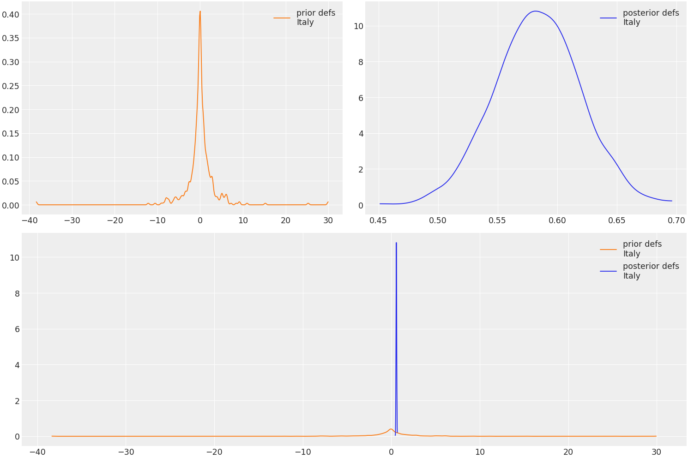

arviz.plot_dist_comparison¶
-
arviz.plot_dist_comparison(data, kind='latent', figsize=None, textsize=None, var_names=None, coords=None, transform=None, legend=True, ax=None, prior_kwargs=None, posterior_kwargs=None, observed_kwargs=None, backend=None, backend_kwargs=None, show=None)[source]¶ Plot to compare fitted and unfitted distributions.
The resulting plots will show the compared distributions both on separate axes (particularly useful when one of them is substantially tighter than another), and plotted together, so three plots per distribution
- Parameters
- dataaz.InferenceData object
InferenceData object containing the posterior/prior data.
- kindstr
kind of plot to display {“latent”, “observed”}, defaults to ‘latent’. “latent” includes {“prior”, “posterior”} and “observed” includes {“observed_data”, “prior_predictive”, “posterior_predictive”}
- figsizetuple
Figure size. If None it will be defined automatically.
- textsize: float
Text size scaling factor for labels, titles and lines. If None it will be autoscaled based on figsize.
- var_namesstr, list, list of lists
if str, plot the variable. if list, plot all the variables in list of all groups. if list of lists, plot the vars of groups in respective lists.
- coordsdict
Dictionary mapping dimensions to selected coordinates to be plotted. Dimensions without a mapping specified will include all coordinates for that dimension.
- transformcallable
Function to transform data (defaults to None i.e. the identity function)
- legendbool
Add legend to figure. By default True.
- ax: axes, optional
Matplotlib axes: The ax argument should have shape (nvars, 3), where the last column is for the combined before/after plots and columns 0 and 1 are for the before and after plots, respectively.
- prior_kwargsdicts, optional
Additional keywords passed to arviz.plot_dist for prior/predictive groups.
- posterior_kwargsdicts, optional
Additional keywords passed to arviz.plot_dist for posterior/predictive groups.
- observed_kwargsdicts, optional
Additional keywords passed to arviz.plot_dist for observed_data group.
- backend: str, optional
Select plotting backend {“matplotlib”,”bokeh”}. Default “matplotlib”.
- backend_kwargs: bool, optional
These are kwargs specific to the backend being used. For additional documentation check the plotting method of the backend.
- showbool, optional
Call backend show function.
- Returns
- axesa numpy 2d array of matplotlib axes. Returned object will have shape (nvars, 3),
- where the last column is the combined plot and the first columns are the single plots.
Examples
Plot the prior/posterior plot for specified vars and coords.
>>> import arviz as az >>> data = az.load_arviz_data('rugby') >>> az.plot_dist_comparison(data, var_names=["defs"], coords={"team" : ["Italy"]})
